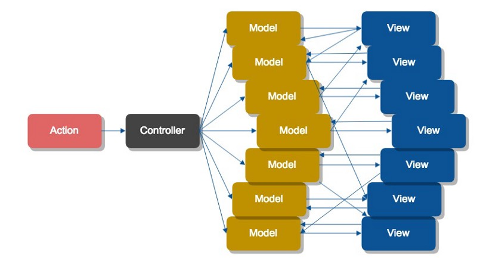
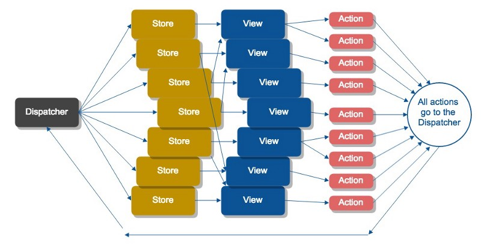

Redux
Why and when?
 Alexandre Meunier (alexandre.meunier@algolia.com)
Alexandre Meunier (alexandre.meunier@algolia.com)
Hello, I'm Alex
I'm a software engineer at
I work on the algolia.com website, mostly using Ruby and Javascript
I am on twitter: @dephadepha
What's Flux?
Flux is the application architecture that Facebook uses for building client-side web applications.
It complements React's composable view components by utilizing a unidirectional data flow. It's more of a pattern rather than a formal framework [...]
What's Flux
Remember MV*?
 http://fluxxor.com/what-is-flux.html
http://fluxxor.com/what-is-flux.htmlWhat's Flux
Remember MV*?
https://medium.com/brigade-engineering/what-is-the-flux-application-architecture-b57ebca85b9e#.f96m63cxlWhat's Flux
Look how simple Flux is
 https://facebook.github.io/flux/docs/overview.html#content
https://facebook.github.io/flux/docs/overview.html#contentWhat is Flux?
Real life Flux

What is Flux?
Key features
- Predictability, Predictability, Predictability
- Always synchronous – one action at a time
- Clear (inverted) control/ownership
- Separation of concerns
What is Redux?
Redux is a predictable state container for JavaScript apps.
What is Redux?
- Evolved from Flux, influenced by Elm
- Created in 2015 by @dan_abramov ...
- ... to demonstrate hot reloading with time travel at React Europe
What is Redux?
What does it look like?
Reducers
function todosReducer(state = [], action) {
switch (action.type) {
case 'ADD_TODO':
return state.concat(action.payload);
default:
return state;
}
}
state.todos // => []
dispatch({
type: 'ADD_TODO',
payload: 'Buy milk'
});
state.todos // => ['Buy milk']
What does it look like?
Dumb components
export function TodoList({todos, addTodo}) {
return (
<div>
<ul>
{todos.map(todo => (
<li>{todo}</li>
))}
<li>
<input type="text" ref="input">
<button onClick={evt => addTodo(evt.target.value)}>
Add
</button>
</li>
</ul>
</div>
);
}
What does it look like?
Smart containers
import {connect} from 'react-redux';
// Inject a subset of the state into this component as prop
function mapStateToProps(state) {
return {todos: state.todos};
}
// Inject action creators as prop
function mapDispatchToProps(dispatch) {
return {
addTodo(newTodo) {
dispatch({type: 'ADD_TODO', payload: newTodo});
}
}
}
connect(mapStateToProps, mapDispatchToProps)(TodoList);Why? – Testability
Testing components
Encourages presentational, stateless components
Components are simple input – output functions
- Don't worry about the data
- Everything is synchronous
- Use spy functions as action handlers
Why? – Testability
Testing components
// Using enzyme, chai, and sinon
const props = {
todos: ['One todo', 'Two todos'];
addTodo: sinon.spy
};
wrapper = enzyme.shallow(<TodoList {...props} />);
expect(wrapper).to.contain(<li>One todo</li>);
expect(wrapper).to.contain(<li>Two todos</li>);
wrapper.find('button').simulate('click');
expect(props.addTodo.calledOnce).to.eql(true);
Why? – Testability
Testing actions and reducers
- Reducers are just functions!
- Actions are just objects!
- Testing them is trivially delightful
const actualInitialState = todosReducer(undefined, {});
expect(actualInitialState).to.eql([]);
const action = {type: 'ADD_TODO', payload: 'New todo'};
expect(todosReducer([], action)).to.eql(['New todo'])
Why? – Performance
- State transformations are immutable
- Works great with updeep, Immutable.JS, etc
connectis smart- Will not rerender if connected state hasn't shallowly changed
shouldComponentUpdateis a thing of the past
const ListItem = ({todo}) => <li>{todo}</li>;
function mapStateToProps(state, ownProps) {
return {
// ↓ shallowCompare this
todo: state.todos[ownProps.index];
}
}
connect(mapStateToProps)(ListItem);Why? – Performance
Tips
- What data do you inject? (reselect can help)
- Favor many small connected components
- Separate data concerns
Why? – Developer experience
- Hot reloading
- Time travel – Not so useful in practice
- Devtools
Developer experience
Devtools
- Actions log
- Inspect state changes
- Export / import state
Why? – Simplicity
- Pure functions, not custom classes
- Simple logic
- Library code is very readable
- Easy to extend
- Adding middlewares to enforce conventions
- Store enhancers for performance
- Bring your own conventions
What's not so good about it?
Trade-offs
- Simple, but lots of boilerplate
- Simple, but conventions are your responsibility!
- Investment
So, should I use it?
- If you like having a thorough understanding of how the data flows into your app, yes!
- If you have a large application, with lots of cross-component state, definitely
But...
- Make sure you master React first!
- And remember that component state (using
setState) is still useful - Check out MobX as well